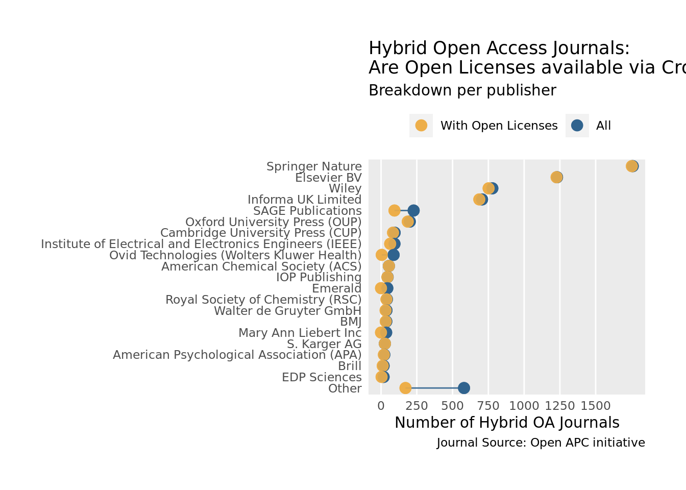
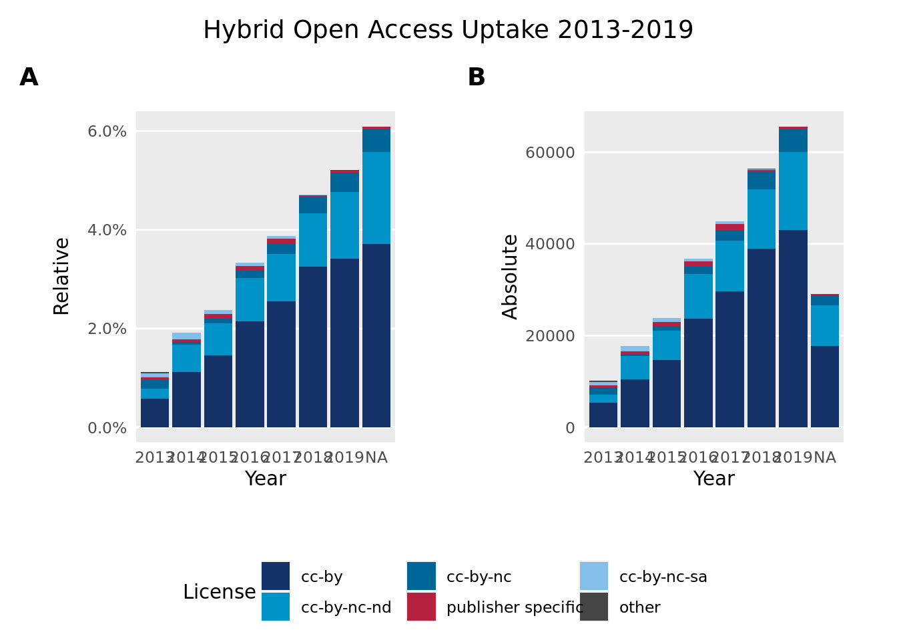
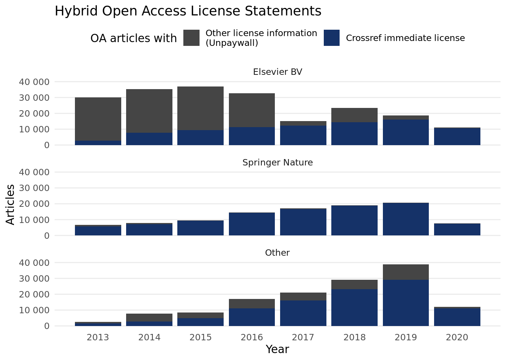
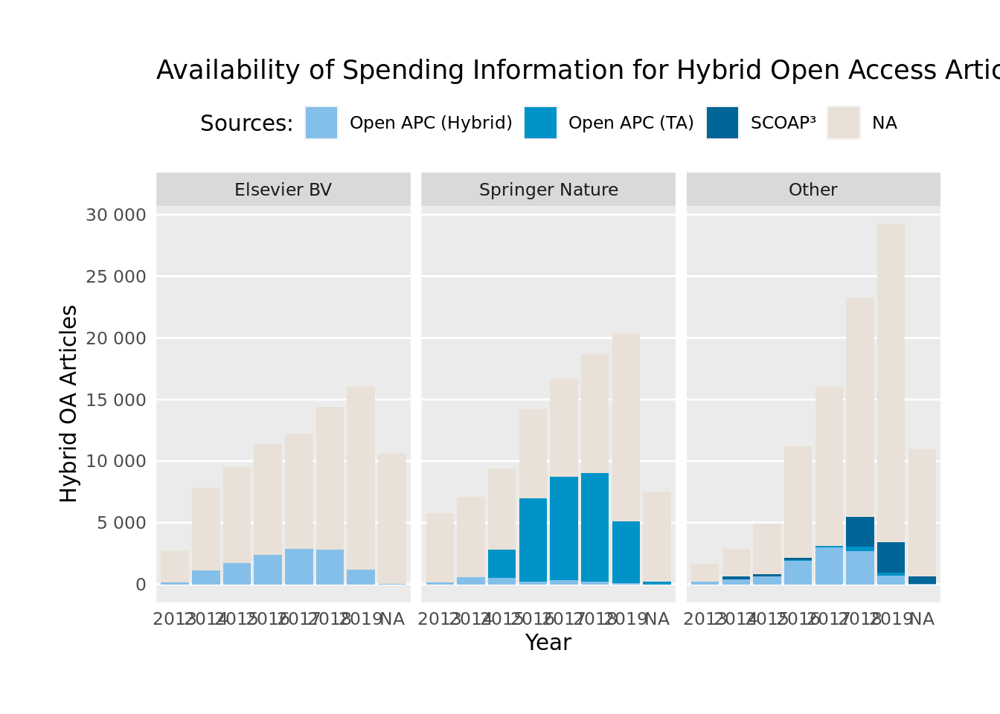
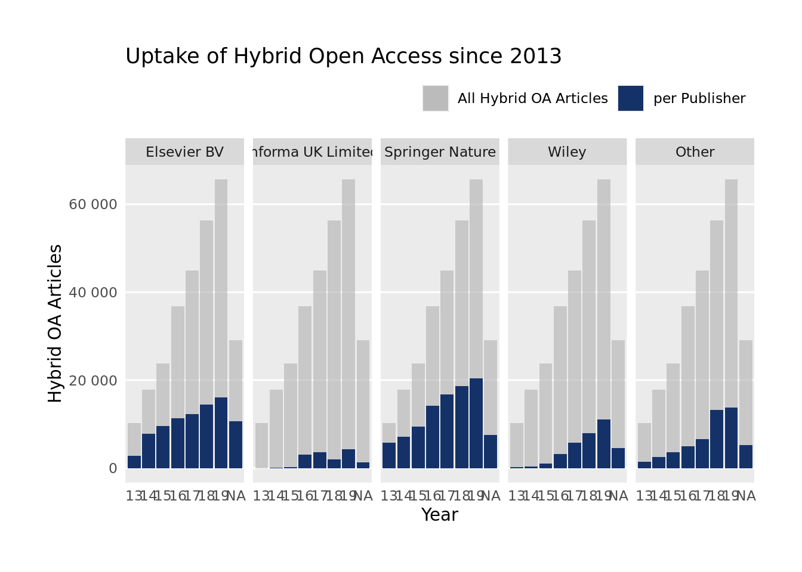
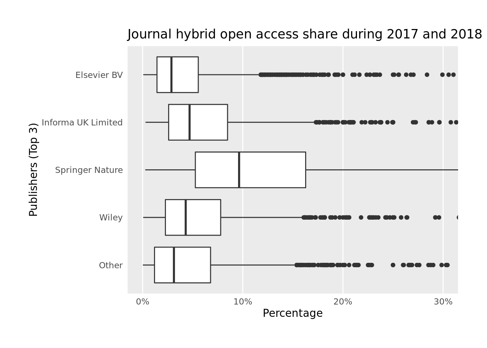
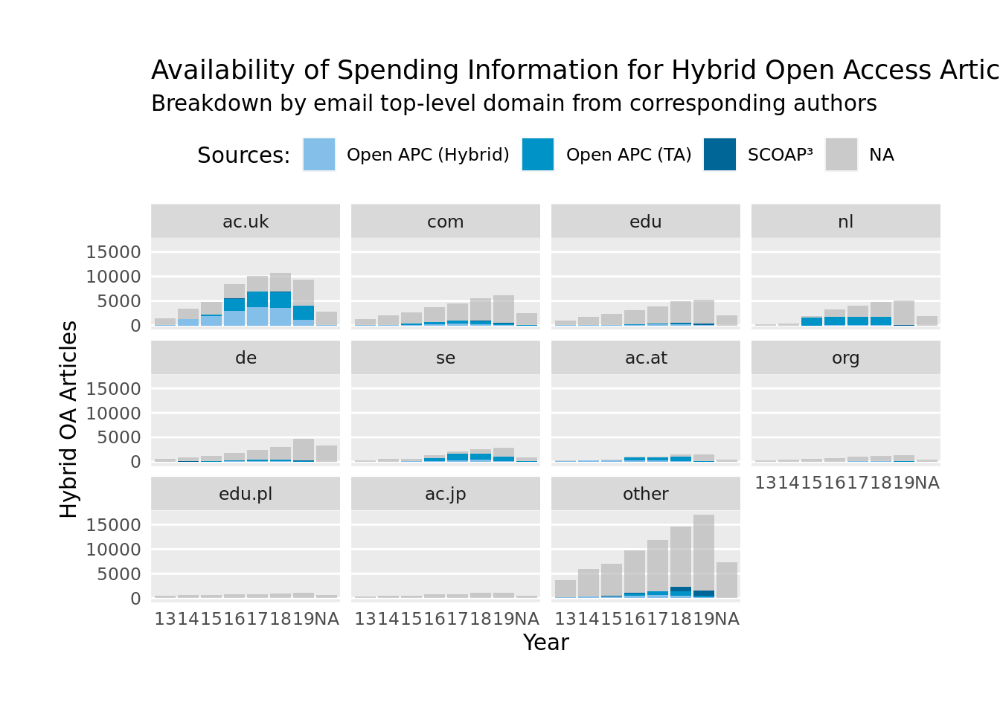

About the Hybrid OA Dashboard
Najko Jahn
First published 2017-11, last updated 2021-02-11
Source:vignettes/about.Rmd
about.RmdSummary
This open source dashboard presents the uptake of hybrid open access for 5,287 subscription journals from 73 publishers. Since 2013, these journals have published 8,042,477 articles, of which 284,659 were made openly available without delay, representing a hybrid open access share of 3.5%.
Hybrid open access journals are included when they share the following two characteristics:
- Academic institutions sponsored immediate open access publication of individual articles according to the Open APC initiative.
- Publishers provided open content license statements via Crossref including information about whether articles were made openly available upon publication or not.
By bringing together openly available datasets about hybrid open access into one easy-to-use tool, this dashboard demonstrates how existing pieces of an evolving and freely available data infrastructure for monitoring scholarly publishing can be re-used to gain a better understanding of hybrid open access publishing. It thus contributes to recent calls from the Open Access 2020 Initiative and the cOAlition S with its Plan S aiming at a data-driven debate about how to transition subscription-based journal publishing to open access.
This document gives information about the design, as well as how to use the dashboard. Because this open source dashboard was built around already existing infrastructure services for scholarly publishing, discussion will also include guidance about how publishers can properly report hybrid open access journal articles to Crossref in accordance with evolving standards such as the ESAC Guidelines for Transformative Agreements.
Background and motivation
Many publishers offer hybrid open access journals (Suber, 2012). However, because of non-standardized reporting practices, it is hard to keep track of how many articles these journals provided in open access, and to what extent these figures relate to the overall article volume (Björk, 2017; Laakso and Björk, 2016). In particular, determining subscription-based journals that already did publish open access articles immediately, as well as obtaining licensing information about access and re-use rights is challenging (Laakso and Björk, 2016; Piwowar et al., 2018). Another question around analyzing hybrid open access is how to distinguish it from delayed open access, a publishing model, which a considerable number of journals practice as well (Laakso and Björk, 2013).
There are varying attempts to investigate the uptake of hybrid open access. While earlier bibliometric studies used reports from publishers (Björk, 2017) or obtained articles manually from publisher websites (Laakso and Björk, 2016), Unpaywall from Impactstory has recently become a popular way to find open access publications, including hybrid open access articles (Else, 2018b). Unpaywall links DOIs from Crossref, a DOI registration agency for scholarly works, to free full-texts. Major bibliometric databases like the Web of Science or Scopus integrate this open access discovery service. Likewise, several bibliometric studies and monitoring services obtained data from Unpaywall to investigate the prevalence of hybrid open access (e.g. Bosman and Kramer (2018), Robinson-Garcia et al. (2019) or the German Open Access Monitor). Following Piwowar et al. (2018), these approaches determined hybrid open access articles as publisher provided open access not being published in fully open access journals listed in the Directory of Open Access Journals (DOAJ). Moreover, articles must be published under an open content license to be characterized as hybrid open access, an information, which Unpaywall retrieved from Crossref and publisher websites.
Despite the considerable efforts to extend the evidence base around open access, Unpaywall’s approach to determine hybrid open access is limited in two respects. First, there are some fully open access journals, which are not indexed in the DOAJ, presumably because these journals did not comply with its comprehensive inclusion criteria. In a large-scale study, Crawford (2017) identified 7,743 non-DOAJ indexed fully open access journals that published at least one article between 2012 and mid 2016. Second, Unpaywall focuses on current open access provision, but does not track when an article was made openly available, which, in turn, makes it hard to distinguish between immediate and delayed open access provision using this data source alone.1 Consequently, Piwowar et al. (2018), in contrast to most definitions and earlier studies (Laakso and Björk, 2016), described hybrid open access articles tagged by Unpaywall as being “not necessarily immediately available (i.e., they may only be freely available after an embargo)”. For these reasons, facilitating bibliometric studies about hybrid open access remains challenging.
This above-described lack of standardized methods and publicly available data about hybrid open access publishing not only limits its quantitative study, but also informed policy-making around open access (Laakso, 2019). Particularly, the business model of hybrid open access journals is disputed, because publisher often charge publication fees, also known as article processing charges (APC), to provide immediate open access to individual articles in addition to subscriptions (Suber, 2012). Although it was initially envisioned that with growing funding opportunities for publication fees publishers would progressively transition hybrid open access journals to fully open access (Prosser, 2003), it remains unclear to which extent the increasing willingness to pay for open access contributed to it, and how cost-effective this spending was (Björk and Solomon, 2014; Pinfield et al., 2017).
Funders and libraries have responded to the problems of missing evidence around hybrid open access publishing in the last years. To make expenditures more transparent, a growing number of institutions have started to disclose individual articles they supported as open data. The Wellcome Trust, the Austrian Science Fund FWF and British universities were among the first who shared their spending for hybrid open access articles (Kiley, 2014; Lawson, 2015; Reckling and Kenzian, 2014). The Open APC Initiative collects and standardizes these openly available spending data together with crowd-sourced expenditures. Because Crossref indexes most articles where institutions sponsored publication fees, Open APC can use its metadata services to make open access expenditures comparable at the level of institutions, publishers and journals (Jahn and Tullney, 2016; Pieper and Broschinski, 2018). So far, the Open APC Initiative disclosed 78,190 hybrid open access articles supported by 315 research performing organisations and funders between 2013 - 2019.
Additionally, funders and libraries have developed compliance criteria including machine-readable Creative Commons license statements to improve the discoverability of open access content. The Sponsoring Consortium for Open Access Publishing in Particle Physic – SCOAP\(^3\), for example, requires CC-BY licenses and archives funded articles in several formats including metadata in a dedicated repository. In Europe, the Wellcome Trust refers to the life science repository Europe PubMed Central (Europe PMC) for depositing funded articles along with a comprehensive set of metadata. Moreover, the funder automatically checks if authors and publishers comply with these obligations (Kiley, 2015). In its contract with the publisher Wiley, the German DEAL consortium stated comprehensive metadata obligations to be implemented using Crossref and its metadata profile (Sander et al., 2019). Likewise, the German Deutsche Forschungsgemeinschaft (DFG) referred to Crossref as metadata service for hybrid open access articles facilitated through its funding programme “Open Access Transition Agreements”. In the US, Chorus, a non-profit serving more than 50 publishers, analyzes Crossref metadata and assess open access compliance for dedicated funders using interactive dashboards.
In light of a perceived slow and ineffective growth of open access, more and more funders and libraries alter their spending on subscription-based journals and individual open access articles published in these outlets. Notably, the Open Access 2020 Initiative calls for a transparent approach to re-allocate budgets currently spent for subscriptions to open access business models. Likewise, the cOAlition S, an international network of research funders, released its widely discussed Plan S in September 2018. Starting from 2021, members of the cOAlition S intend to discontinue funding of publication fees for individual open access articles in subscription-based journals. However, hybrid open access articles published under a transformative agreement, in which spendings for subscription and open access publication are considered together, will remain eligible for funding. Nonetheless, the Plan S requires a commitment to full open access transition from the publishers. Journals providing delayed open access are not compatible with the Plan S.
In its Plan S implementation planning the cOAlition S refers to the ESAC Initiative, which aims at standardizing open access workflows between publishers and research institutions, to observe the transition process of journals under transformative agreements. In 2017, ESAC, based at the German Max Planck Digital Library (MPDL), released guidance about how to implement transformative agreements. According to these guidelines, publishers have to ensure that only corresponding authors affiliated with the agreement institution are eligible for open access support. Furthermore, publishers need to provide comprehensive metadata to Crossref including open content license information. They are also entitled to report sponsored articles to the agreement institutions (Geschuhn and Stone, 2017). Complementary to spendings for individual hybrid open access articles, some library consortia like the Swedish Bibsam or the British Jisc have begun to make these reports openly available with the Open APC Initiative (Lundén et al., 2018; Pieper and Broschinski, 2018). To support the monitoring of transformative agreements at the publisher-level, ESAC has started an agreement registry targeting national consortia to disclose their contracts.
These developments show that open and standardized reporting is critical to assess hybrid open access publishing. Against this background, this work presents a new methodology for investigating the uptake of hybrid open access, taking into account journals with the following two characteristics:
- Academic institutions sponsored immediate open access publication of individual articles according to the Open APC initiative,
- Publishers provided open content license statements via Crossref including information about whether articles were made openly available upon publication or not.
To my knowledge, this is the first approach that combines openly available data about the productivity of and the spending for hybrid open access journals. Reflecting recent compliance efforts from funders and libraries, it extends existing methods to find hybrid open access articles in two ways: First, it addresses the difficulties to identify hybrid open access journals, which already did publish individual open access articles by using spending information. Second, this approach uses Crossref metadata to exclude delayed open access provision that does not comply with the Plan S.
The aim of this work is to address the following questions that are relevant to research and practitioners alike:
- How many hybrid open access journals and publisher have provided immediate open access to individual articles during 2013-2019?
- What has been the yearly relative and absolute hybrid open access uptake?
- To what extent is spending information for hybrid open access articles publicly available?
- Do hybrid open access uptake levels vary by publisher, journal and country?
Data and Methods
Methods follow the Wickham-Grolemund approach to practice data science (Wickham and Grolemund, 2017). After importing, cleaning (“tidying”) and transforming data from various sources, a process called “data wrangling”, summary statistics were calculated and visualized to understand and communicate the uptake of hybrid open access publishing. For the latter, we created a dashboard, which allows visual interaction with our data. The workflow, illustrated in Figure 1 and described more detailed in this section, was implemented in R using open data and tools, making it transparent and re-usable.
This project, which is under active development, started in November 2017, and is updated on a regular basis. Data used in the current version were gathered on 2021-02-11. Along with the data, methods are shared in the source code repository of this project, which is hosted on GitHub.

Figure 1: The Wickham-Grolemund Approach to Data Science
Data Analysis
To reflect the challenge of finding hybrid open access journals with published open access articles (Laakso and Björk, 2016), I started with a sample of hybrid open access journals from the Open APC initiative. This open data initiative crowd-source information about spending on open access journal articles from various international research organisations. Its openly available dataset differentiates expenditure for articles published in hybrid and in fully open access journals. It also has a dedicated dataset containing information about articles, which were made openly available as part of transformative agreements, deals between publishers and large research organizations or consortia aiming at transitioning subscription-based licensing to open access business models. Using data from the Open APC initiative, thus, ensured that only hybrid open access journals with at least one institutionally funded open access article were examined.
After obtaining a list of hybrid open access journals from the Open APC initiative, Crossref’s REST API was queried to discover open access articles published in these journals, as well as to retrieve yearly article volumes for the period 2013 – 2019.
Using the rcrossref client (Chamberlain et al., 2019), developed and maintained by the rOpenSci initiative, the first API call retrieved all licenses URLs available per journal using all ISSN variants available in Open APC dataset.
To control developments of the publishing market resulting in name changes of publishers or journal titles over time, only the most frequent facet field name was used.
I also drew on facet field counts to obtain the yearly article volume per journal from Crossref.
After matching licensing URLs indicating open access articles with the help of the dissem.in / oaDOI access indicator list, a second API call checked licensing metadata.
Here, I excluded delayed open access articles by using the Crossref’s REST API filters license.url and license.delay for the every single year in period of 2013 – 2019.
Next, URLs representing licenses were normalized to Creative Commons or publisher specific open content license statements.
Because journal business models can change from hybrid to fully open access over time, the Directory of Open Access Journals (DOAJ), a curated list of fully open access journals, was finally checked to exclude these journals by ISSNs.
To improve this matching, DOAJ data was enriched with further ISSN variants from Rimmert et al. (2017).
Journals with a open access proportion above 0.95 over two years were also excluded.
Because journals can also change from fully open access to a subscription-based business model (Matthias et al., 2019b), a comprehensive dataset of reverse flip journals (Matthias et al., 2019a) was finally used to identify such journals in our sample, and to exclude annual volumes published before the conversion from it.
Using Unpaywall data, I was able to determine additional articles with open content license statements, and compared them with our journal sample. After importing the Unpaywall dump to a Google Big Query instance, I searched all articles where license statements were available for the version of record with the bigrquery interface (Wickham, 2018)2. Only articles from 2013 onwards in non-DOAJ indexed journals were considered. Subsequentially, I retrieved all ISSN variants for each journal in the Unpaywall sample and matched them with our hybrid open access journal sample. Finally, we compared articles contained in our sample with that of Unpaywall using DOIs. Because DOI names are case insensitive, DOIs were converted to lowercase before the matching.
Information about corresponding authors play a crucial role in open access funding (Geschuhn and Stone, 2017; Schimmer et al., 2015). Because not all publishers share standardized affiliation data with Crossref, I text-mined our article sample for author emails, assuming that email domains roughly indicate the affiliation of the first respective corresponding author at the time of publication. First, I interfaced PubMed Central’s Open Access subset and, if the article was not available via PubMed Central, the Crossref TDM service using crminer from rOpenSci (Chamberlain, 2018). From the so downloaded full-texts, I extracted the first email occurrence per article using pattern matching. Next, I split the email domains in its parts with urltools (Keyes et al., 2018). To avoid mis-use, particularly academic spamming, source code and data used for this text-mining exercise are currently stored in a privately git-repository until it is secured that no full author emails are accidentally shared.
After exploring the so obtained data, communication is the final step in the Wickham-Grolemund approach to practice data science. Given the increasing demand for data-driven insights about the uptake of hybrid open access, I decided to present the results as an interactive dashboard, an efficient way to communicate results from a data analysis (Wickham and Grolemund, 2017). To this end, I prototyped a shiny web application (Chang et al., 2019) that shows the development of hybrid open access publishing. More specifically, I used the flexdashboard package (Borges and Allaire, 2017) that belongs to the R Markdown authoring framework for data science. This allowed coding the analytical web application within an R-based data analytics workflow (Allaire et al., 2019; Xie et al., 2018), thereby shielding the data work from complex components written in other programming languages needed for interactive web applications.
Staying in the R-based data analytics workflow enabled re-using many R packages, which were also applied for data wrangling and exploration, particularly dplyr (Wickham et al., 2019) and tidyr (Wickham and Henry, 2019).
For data import and storage, I used the packages readr (Wickham et al., 2017) for csv and jsonlite (Ooms, 2014) for json files.
Furthermore, exploratory visualisations made with ggplot2, a domain specific language for statistical graphs (Wickham, 2016), were converted to interactive plotly charts (Sievert, 2018), an open-source charting library written in JavaScript.
Additionally, the echarts4r package (Coene, 2018), an interface to the javascript-based Echarts library, was used for presenting the distribution of email domains and their parts as hierarchical treemaps.
Along with the source code for the data analysis and the dashboard, datasets used are available via GitHub along with a brief description about which the variables they contain: https://github.com/subugoe/hoad/blob/master/data/README.md. Using Git, the history of the text-based datasets and source code was tracked, too.
Data Accuracy
Notice that my estimates about the extent of hybrid open access publishing are likely to be conservative. Probably not all authors and institutions shared information about hybrid open access spending with the Open APC initiative, because reporting is voluntary (Jahn and Tullney, 2016). Despite its international focus, most hybrid open access spending information in Open APC originated from European institutions, in particular from the UK. In case of transformative agreements, it must be noted that the Open APC Initiative has a strong focus on articles from the Springer Compact scheme (Pieper and Broschinski, 2018). But, as the example of the Sponsoring Consortium for Open Access Publishing in Particle Physic – SCOAP\(^3\) demonstrates, who uses an open access repository to share sponsored articles, demonstrate, complementary ways to make open access funding exist, which the Open APC initiative has not covered (yet).
Similarly, it is likely that not all publishers reported comprehensive metadata about access and re-use with Crossref, because the DOI registration agency did not mandate license statements for open access content at the time of our study. Piwowar et al. (2018) found that Crossref metadata lacks some license coverage. Therefore, they investigated publisher websites for license statements as well. Furthermore, Piwowar et al. (2018) observed that the percentage of open access provided by publishers, which was free to read, but where the journal was neither listed in the DOAJ nor provided licensing metadata, which they refer to as “bronze open access”, was the most common method to provide open access among publishers. Finally, Piwowar et al. (2018) estimated that the Crossref genre type “journal-article” did not necessarily refer to original article and reviews. Instead, around 7% were front-matters.
To assess data accuracy of this dashboard, we first describe how many hybrid open journals covered by the Open APC initiative provided license statements to Crossref between 2013 - 2019. Next, we evaluated the accuracy of the automated retrieval using article random samples.3
Coverage accuracy
In the case of hybrid open access journals represented in the Open APC datasets, 73 publishers provided licensing statements via the Crossref API, representing 35 % of all publishers studied. At the journal-level, 86 % of all hybrid open access journal titles covered by the Open APC initiative shared open content license statements valid without delay with Crossref. Figure 2 provides a breakdown of licensing metadata coverage per publisher. It highlights that leading commercial publishing houses provided open content license statements to Crossref for most of their journals listed by the Open APC initiative including Springer Nature, Elsevier BV and Wiley. SAGE Publications and many smaller sized publishers, however, did not share license metadata to Crossref. Consequently, their journals were not included in our study.

Figure 2: Overview of Crossref licensing coverage per publisher
Retrieval accuracy
56,408 out of 78,190 hybrid open access articles disclosed by the Open APC initiative provided open content license statements valid without delay, representing a percentage of 72 %.
To assess the accuracy of our retrieval, we manually checked a random sample of 100 Open APC articles not being found.
We determined 93 articles that did not share license statements with Crossref using the license node. The other 7 articles did report an open content license, but with a delay (delay-in-days metadata field) above 0 days.4
We were able to retrieve emails for 90 % of all articles in our dataset. Furthermore, recall and precision for obtaining and extracting email addresses from full-texts were investigated using a random sample of 200 articles. Recall asked if all author email addresses were found. Precision asked if the first author email match was correct. While all first email addresses were correctly parsed (precision = 1), 40 articles contained more than one email from authors (recall = 0.8). In two cases, the corresponding author named two emails.
Results
Using data from Open APC and Crossref, we found 284,659 open access articles published without delay in 5,287 subscription-based journals from 73 publishers between 2013 - 2019. Overall, these journals published 8,042,477 articles, resulting in a hybrid open access uptake of 3.5 %.
In the following, this section present the functionality of the interactive dashboard, and highlight key findings from an exploratory data analysis. The dashboard itself is divided into three webpages, which are accessible through the navigation bar. The first webpage, “Overview”, summarizes the development of hybrid open access publishing. The analysis can subsetted by a publisher or a journal. The second webpage, “Compare”, let you analyze the uptake of hybrid open access across publisher and years. The third webpage, “Institutional View”, is similar to the first webpage, but allows browsing by email domains instead of publishers and journals.
Overview: Longitudinal development of hybrid open access publishing
Launching the app shows up the key findings, which can be broken down by publisher or journal using the select boxes in the left sidebar. Publisher names are listed in decreasing order of the size of the article volume. Journals are filtered conditionally to the publisher selection and are sorted alphabetically.
Growth of hybrid open access
The upper part of the dashboard highlights the longitudinal development of hybrid open access publishing between 2013 - 2019. The first tab shows the relative uptake, while the second tab presents the hybrid open access article count on a yearly basis. Similar to the dashboard, Figure 3 illustrates the relative and absolute uptake since 2013. Bar charts are sub-grouped according to normalized license statements obtained from Crossref. Overall, results indicate that the number and proportion of hybrid open access journal articles rose steadily from 2013 (10,217 articles, OA share: 1.1 %) to 2018 (56,348 articles, OA share: 4.7 %). CC-BY is the most prevalent open content license found. Around 64 % of open access articles were made available using this license, followed by the less permissive license CC-BY-NC-ND, representing 26 % of the articles.

Figure 3: Uptake of hybrid open access license statements
Comparison with license information from Unpaywall
The third tab presents the article coverage of the dashboard, and compares it with the number of additional articles that were retrieved from Unpaywall for the same set of hybrid open access journals. Although Unpaywall determined hybrid open access articles using open content licenses from Crossref as well, the service furtermore searched publisher websites. In doing so, Unpaywall did not keep track when an article was made openly avaible. For these reasons, this comparision indicates whether publisher reported license metadata to Crossref comprehensively, and whether or not journals provided delayed open access along with hybrid open access. In total, 158,300 additional open access articles could be retrieved using Unpaywall.
Similar to the dashboard presentation, Figure ?? compares the development of hybrid open access according to our data (blue area) with additional articles with open access license statements from Unpaywall (gray area). The figure provides a yearly breakdown for the two largest publishers in our sample, Elsevier and Springer Nature. Open access articles from the remaining 71 publishers were reduced to the residual category “Other”. The sharp decline of articles found by Unpaywall for Elsevier journals suggests that delayed open access was offered along with options to make individual articles open access upon publication. Indeed, Elsevier lists 130 journals with embargo periods between six and 48 months. A prominent example is the life-science journal Cell where all articles are made freely available after an embargo period of twelve months. While we found 259 hybrid open access articles published without delay, Unpaywall lists another 2,161 Cell articles with open content license, representing 46 % of the journal’s article volume that had been published since 2013. On the other hand, the number of additional Springer Nature articles obtained using Unpaywall’s license evidence is much lower, suggesting that delayed open access plays a smaller role in Springer Nature’s hybrid open access journal portfolio, and that license statements were shared to a large extent with Crossref.

Figure 4: Hybrid Open Access License Statements
Transparency of hybrid open access
In the lower part of the dashboard page “Overview”, the left-hand graph shows the extent to which information about open access funding was made transparent. On the right, an interactive chart presents the first respective corresponding author email’s top and lower-level domain (TLD).
Figure 5 presents the availability of spending information for open access articles, highlighting the two largest publishers Elsevier BV and Springer Nature. Open access articles from the remaining 71 publishers were reduced to the the residual category “Other”. Bars show the total number of hybrid open access articles per year and publisher. The bars are stacked according to the sources that disclosed the support of open access publication at the article-level (colored stacks), and where no such information was available (gray stacks labeled with NA).
The figure reveals large differences how funders and libraries enabled hybrid open access publications across publishers. While individual payments for publication fees dominated the sponsorship of open access publications in Elsevier journals, and that of many other publishers, supported Springer Nature hybrid open access articles mostly come from transformative agreements. The figure also highlights that these agreements contributed to the growth of hybrid open access articles published in Springer Nature journals. Moreover, 5 suggests that transformative agreements contribute to transparency: Whereas spending for 34 % of hybrid open access articles published in Springer Nature journals was disclosed with the Open APC initiative, the origin of expenditure for hybrid open access articles in Elsevier journals was available to a lesser extent (15 %). The largest match between publication and spending data, however, could be found for hybrid open access journals sponsored by the SCOAP\(^3\) consortium; the SCOAP\(^3\) repository tracked 91 % of hybrid open access articles published in SCOAP\(^3\) sponsored journals. It must be noted, however, that SCOAP\(^3\) supports high-energy physics content in these journals only. The remaining 9.1 % were therefore likely published on related topics. In total, spending information for 22 % of articles was found.

Figure 5: Development of spending disclosure
Comparison: Variation in Hybrid Open Access Publishing
The second dashboard page, “Compare”, allows to explore how hybrid open access publishing varies across publishers. It focuses on market shares, and uptake levels of hybrid open access across journals and publishers. A table at the bottom of the webpage presents key indicators at the journal-level, which can be searched and downloaded as Excel spreadsheet.
Figure ??, which is also shown at the top of the “Overview” dashboard page, presents the top three publishers in terms of the number of hybrid open access articles published since 2013. Grey bars present the total number of hybrid open access articles, colored bars the number of hybrid open access articles per publisher. These top three publishers – Elsevier BV, Springer Nature and Wiley – accounted for the largest proportion of open access articles (77 %), and that of hybrid open access journals (71 %).

As shown in Figure 7, numbers and proportion of hybrid open access journal articles vary across publishers and journals. In the two-years period 2017-2018, for example, the mean open access proportion per Springer Nature journal was 12 % (SD = 9.9 %), whereas the mean open access proportion per journal published by Elsevier BV was 4.2 % (SD = 4.6 %). The publisher Wiley performed between these two: The mean proportion was 5.9 % (SD = 5.2 %).

Figure 7: Spread and differences of the share of open access articles
Institutional view
The third dashboard page, “Institutional View”, provides a complementary view on the growth of hybrid open access. Instead of presenting the longitudinal development at the publisher and journal level, the data can be subsetted by double-clicking on the email domains shown in the treemap visualization. The top-level domain indicates the country and the sub-domain represent the name of the affiliation of the first or corresponding authors. The so selected data is then broken down by license statements, and by the availability of spending information. At the bottom, a table presents a breakdown by publisher per selection.
Figure 8 illustrates the uptake of hybrid open access, focusing on the public availability of spending information from academic institutions and consortia, an important measure to assess the transparency of open access funding. The figure highlights the prominent role hybrid open access publishing has among authors affiliated with British academic institutions; more than 20% of all hybrid open access articles were published from UK-based first or corresponding authors. According to spending data from the Open APC initiative, hybrid open access publication for articles from the UK were facilitated both through individual publication fees, also known as article-processing charges (APC), and transformative agreements.
The large overlap between publication data and spending information from the Open APC collection for transformative agreements can be explained by coordinated national activities to transition subscriptions. Together with the UK, Dutch, Swedish and Austrian library consortia participate in the Springer Compact license scheme. Under this agreement, members from participating institutions are subscribed to read around 1,800 journals. Corresponding authors affiliated with these institutions can also publish open access in them. These consortia actively fed data about supported articles into Open APC (Pieper and Broschinski, 2018). Spending information from countries without an coordinated approach toward hybrid open acces publishing including transformative agreements, however, were not well represented in the spending data provided by the Open APC initiative. The sponsors of these open access publications were therefore unknow to us.

Figure 8: Availability of spending information
Discussion and Conclusion
In light of the ongoing debate on the transition to open access, this dashboard highlights a steady, but varying uptake of hybrid open access. Data collection takes advantage of an improved level of compliance with policy recommendations that have addressed open access discoverability and transparent workflows in recent years. Finding suggests that both major publishing houses and transformative agreements have a large impact on hybrid open access uptake. However, open access funding for most hybrid open access articles remains unknown, which raises important questions about the transparency of this publishing model.
The presented longitudinal findings support earlier studies, confirming the growth of hybrid open access publishing. Björk (2012) observed a slow, but constant rise of hybrid open access. The author estimated 12,000 open access articles under this model in 2012. Laakso and Björk (2016) found that during the period of 2007–2013 both the number of journals with at least one open access article and the article volume increased. They determined 13,994 hybrid open access articles published in 2,714 different journals during 2013. During this year, around 40% of hybrid journals did, in fact, publish open access articles. In a follow-up study, Björk (2017) noticed an accelerated growth of articles since 2014, whereby 20 major publishers published around 44,395 hybrid open access articles in 2016. According to this study, an increasing willingness to fund publication fees, in particular among Austrian and British research funders and universities, likely influenced this strong uptake. But also more and more national consortia and large research institutions accomplished to accommodate open access in their agreements with publishers.
When combining openly available bibliometrics data with spending data, these trends become apparent. UK-based corresponding authors were responsible for around every fifth hybrid open access article, presumably because of comprehensive funding activities in the course of the Finch report in 2012 (Pinfield et al., 2015). Austria, where the Austrian Science Fund (FWF) has financed hybrid open access publication fees since many years (Reckling and Kenzian, 2014), is also well represented among the top countries publishing hybrid open access. Not surprisingly, publishers with an leading role in hybrid open access publishing also dominate the subscription market. Moreover, transformative agreements have strongly driven growth in hybrid open access uptake since 2015. Most notably, Springer Nature, who already had been among the first with an aligned portfolio of hybrid open access journals, has offered the Springer Compact agreement to selected national consortia and large research organizations since then (Geschuhn and Stone, 2017; Laakso et al., 2016). Authors affiliated with countries where these agreements were in place, including the UK, the Netherlands, Sweden and Austria, ranked among the top in terms of published hybrid open access articles. Likewise, Springer Nature not only publishes the largest volume of hybrid open access journals and articles. The publisher also has an above-average uptake. In contrast, Elsevier BV, a publisher reported as being reluctant to transformative agreements (Else, 2018a), performs at a lower level.
Despite the push to hybrid open access, particularly to transformative agreements, only a small proportion of articles, around 5 % in 2018, has become openly available under this model so far. Even though former studies observed higher uptake levels, probably because of methodological differences, these can be still described as low. Studying subscription-based journals with at least one identified hybrid open access article, Laakso and Björk (2016) determined an open access share of 3.8 % for the period of 2011–2013. Piwowar et al. (2018), estimated an even higher proportion according to which 9.4 % of articles published in 2015 were provided open access with license statements, with or without delay, by non-DOAJ indexed journals. Depending on the disciplinary, institutional and funding context, uptake levels can vary (Severin et al., 2018; Siler et al., 2018). However, the proportion of hybrid open access articles is likely of little use as an indicator to assess the feasibilitly of journal transition to fully open access. Rather, motivation for journal flipping comes from different actors and draws on a variety of strategies to sustain journal operation (Laakso et al., 2016; Matthias et al., 2019b).
As discussed in the method section, the scope of the dashboard is delimited to journals that follow best-practices to ensure the discoverability and transparency of hybrid open access publishing. Particularly, many smaller publishing houses that demonstrably published hybrid open access articles, do not share license statements with a start date through Crossref. It must be also noted that around 6% of publications presented as hybrid open access articles refer to other types of journal contributions that funding mechanisms for hybrid open access usually not cover, including conference abstracts or comments. Matching and cross-validating Crossref metadata dumps with bibliometric databases is a promising approach to better understand these metadata issues (Akbaritabar and Stahlschmidt, 2019). Likewise, the Open APC Initiative partly covers open access funding information and appears to miss a considerable amount of articles
An obvious direction for future work is to extend the hybrid open access journal sample with journals obtained from publishers’ websites. Example for such bibliometric studies addressing hybrid open access are Laakso and Björk (2016) and Matthias et al. (2019b). Both studies, however, note that collecting data from them was very laborious, because of non-standardized spreadsheet formating. In the course of the Plan S consultation, the ESAC Initiative has launched another promising data source about hybrid open access. Its Registry of Transformative Agreements crowd-source contract summaries from library consortia. So far, the registry presents details about 44 agreements. Some of those contracts yield information about eligible journals. At the article-level, it must be observed if and to what extent library consortia will disclose open access articles from transformative agreements in the near future. Additionally, the dashboard needs to address journals subjects and indexing in bibliometric databases as potential factors affecting hybrid open access uptake in future.
As this dashboard demonstrates, publishers, funders and publishers alike can improve the evidence base of hybrid open access publishing.
Crossref provides excellent guidance for publishers to make licensing metadata available via the Crossref APIs:
https://support.crossref.org/hc/en-us/articles/214572423-License-metadata-Access-Indicators-.
For being best represented in this dashboard, publishers will have to make sure to include license URL element license_ref and a start_date equal to the date of publication in the licensing metadata, which helps to identify open access journal content as well as to differentiate between immediate and delayed open access.
Likewise, research institutions, funders, and libraries can increase transparency about hybrid open access publishing including transformative agreements by reporting funded articles to the Open APC initiative on a regular basis.
Library consortia should also disclose transformative aggreements with the ESAC Registry of Transformative Agreements.
These activities comply with best-practise recommendations, including the ESAC’s Guidelines for Transformative Agreements, and the Plan S implementation planning.
In the end, this open source dashboard demonstrates how existing pieces of an evolving and freely available data infrastructure for analyzing scholarly publishing can be re-used to gain a better understanding of hybrid open access. In future, an improved compliance will likely extend the evidence base about hybrid open access. This will allow for broader comparisons of high practical relevance addressing market concentration and the impact of transformative agreements as means to transition journals to full open access. Is the hybrid open access market dominated by a few countries and publishers? Or were they more likely to succeed in their attempts to put open and transparent workflows in place? What is the impact of hybrid open access publishing in general, and transformative agreements, in particular, on the transition of institutional as well as subject- and funder-specific publication practices? And do these activities contribute to journal flipping from a subscription-based model to fully open access?
Bibliography
Akbaritabar, A., and Stahlschmidt, S. (2019). Applying crossref and unpaywall information to identify gold, hidden gold, hybrid and delayed open access publications in the KB publication corpus. SocArXiv. http://doi.org/10.31235/osf.io/sdzft.
Allaire, J., Xie, Y., McPherson, J., Luraschi, J., Ushey, K., Atkins, A., Wickham, H., Cheng, J., Chang, W., and Iannone, R. (2019). Rmarkdown: Dynamic documents for r. Available at: https://rmarkdown.rstudio.com.
Björk, B.-C. (2012). The hybrid model for open access publication of scholarly articles: A failed experiment? Journal of the American Society for Information Science and Technology 63, 1496–1504. http://doi.org/10.1002/asi.22709.
Björk, B.-C. (2017). Growth of hybrid open access, 2009–2016. PeerJ 5, e3878. Available at: https://doi.org/10.7717/peerj.3878.
Björk, B.-C., and Solomon, D. (2014). How research funders can finance APCs in full OA and hybrid journals. Learned Publishing 27, 93–103. http://doi.org/10.1087/20140203.
Borges, B., and Allaire, J. (2017). Flexdashboard: R markdown format for flexible dashboards. Available at: https://CRAN.R-project.org/package=flexdashboard.
Bosman, J., and Kramer, B. (2018). Open access levels: A quantitative exploration using web of science and oaDOI data. http://doi.org/10.7287/peerj.preprints.3520v1.
Chamberlain, S. (2018). Crminer: Fetch ’scholary’ full text from ’crossref’. Available at: https://CRAN.R-project.org/package=crminer.
Chamberlain, S., Zhu, H., Jahn, N., Boettiger, C., and Ram, K. (2019). Rcrossref: Client for various ’crossref’ ’apis’. Available at: https://CRAN.R-project.org/package=rcrossref.
Chang, W., Cheng, J., Allaire, J., Xie, Y., and McPherson, J. (2019). Shiny: Web application framework for r. Available at: https://CRAN.R-project.org/package=shiny.
Coene, J. (2018). Echarts4r: Create interactive graphs with ’echarts javascript’ version 4. Available at: https://CRAN.R-project.org/package=echarts4r.
Crawford, W. (2017). Gray Open Access 2012–2016: Open Access Journals Beyond DOAJ. Available at: https://citesandinsights.info/civ17i1.pdf.
Else, H. (2018a). Dutch publishing giant cuts off researchers in germany and sweden. Nature 559, 454–455. http://doi.org/10.1038/d41586-018-05754-1.
Else, H. (2018b). How unpaywall is transforming open science. Nature 560, 290–291. http://doi.org/10.1038/d41586-018-05968-3.
Geschuhn, K., and Stone, G. (2017). It’s the workflows, stupid! What is required to make “offsetting” work for the open access transition. Insights the UKSG journal 30, 103–114. Available at: https://doi.org/10.1629/uksg.391.
Jahn, N., and Hobert, A. (2019). Scholarly communication analytics: Open access evidence in unpaywall. Available at: https://subugoe.github.io/scholcomm_analytics/posts/unpaywall_evidence/.
Jahn, N., and Tullney, M. (2016). A study of institutional spending on open access publication fees in germany. PeerJ 4, e2323. http://doi.org/10.7717/peerj.2323.
Keyes, O., Jacobs, J., Schmidt, D., Greenaway, M., Rudis, B., Pinto, A., Khezrzadeh, M., Meilstrup, P., Costello, A. M., Bezanson, J., Meilstrup, P., and Jiang, X. (2018). Urltools: Vectorised tools for url handling and parsing. Available at: https://CRAN.R-project.org/package=urltools.
Kiley, R. (2014). Wellcome trust apc spend 2012-13: Data file. http://doi.org/10.6084/m9.figshare.963054.
Kiley, R. (2015). Wellcome trust open access (oa) spend and compliance monitoring: 2013-14. http://doi.org/10.6084/m9.figshare.1321361.v5.
Laakso, M. (2019). Why we need a public infrastructure for data on open access. Elephant in the Lab. http://doi.org/10.5281/zenodo.2540472.
Laakso, M., and Björk, B.-C. (2013). Delayed open access: An overlooked high-impact category of openly available scientific literature. Journal of the American Society for Information Science and Technology 64, 1323–1329. http://doi.org/10.1002/asi.22856.
Laakso, M., and Björk, B.-C. (2016). Hybrid open access–a longitudinal study. Journal of Informetrics 10, 919–932. http://doi.org/10.1016/j.joi.2016.08.002.
Laakso, M., Solomon, D., and Björk, B.-C. (2016). How subscription-based scholarly journals can convert to open access: A review of approaches. Learned Publishing 29, 259–269. http://doi.org/10.1002/leap.1056.
Lawson, S. (2015). APC data for 25 uk higher education institutions - 2014. http://doi.org/10.6084/m9.figshare.1305596.v5.
Lundén, A., Smith, C., and Wideberg, B.-M. (2018). National licence negotiations advancing the open access transition a view from sweden. Insights the UKSG journal 31. http://doi.org/10.1629/uksg.413.
Matthias, L., Jahn, N., and Laakso, M. (2019a). Reverse flip open access journals. http://doi.org/10.5281/zenodo.2553582.
Matthias, L., Jahn, N., and Laakso, M. (2019b). The two-way street of open access journal publishing: Flip it and reverse it. Publications 7, 23. http://doi.org/10.3390/publications7020023.
Ooms, J. (2014). The jsonlite package: A practical and consistent mapping between json data and r objects. arXiv:1403.2805 [stat.CO]. Available at: https://arxiv.org/abs/1403.2805.
Pieper, D., and Broschinski, C. (2018). OpenAPC: A contribution to a transparent and reproducible monitoring of fee-based open access publishing across institutions and nations. Insights the UKSG journal 31. http://doi.org/10.1629/uksg.439.
Pinfield, S., Salter, J., and Bath, P. A. (2015). The ’total cost of publication’ in a hybrid open-access environment: Institutional approaches to funding journal article-processing charges in combination with subscriptions. Journal of the Association for Information Science and Technology 67, 1751–1766. http://doi.org/10.1002/asi.23446.
Pinfield, S., Salter, J., and Bath, P. A. (2017). A gold-centric implementation of open access: Hybrid journals, the "total cost of publication", and policy development in the UK and beyond. Journal of the Association for Information Science and Technology 68, 2248–2263. http://doi.org/10.1002/asi.23742.
Piwowar, H., Priem, J., Larivière, V., Alperin, J. P., Matthias, L., Norlander, B., Farley, A., West, J., and Haustein, S. (2018). The state of OA: A large-scale analysis of the prevalence and impact of open access articles. PeerJ 6, e4375. http://doi.org/10.7717/peerj.4375.
Prosser, D. C. (2003). From here to there: A proposed mechanism for transforming journals from closed to open access. Learned Publishing 16, 163–166. http://doi.org/10.1087/095315103322110923.
Reckling, F., and Kenzian, M. (2014). Austrian science fund (fwf) publication cost data 2013. http://doi.org/10.6084/m9.figshare.988754.v4.
Rimmert, C., Bruns, A., Lenke, C., and Taubert, N. C. (2017). ISSN-Matching of Gold OA Journals (ISSN-GOLD-OA) 2.0. http://doi.org/10.4119/unibi/2913654.
Robinson-Garcia, N., Costas, R., and Leeuwen, T. N. van (2019). Indicators of open access for universities. in ISSI 2019 conference Available at: https://arxiv.org/abs/1906.03840.
Sander, F., Hermann, G., Hippler, H., Meijer, G., and Schimmer, R. (2019). Projekt deal – john wiley & son publish and read agreement. http://doi.org/10.17617/2.3027595.
Schimmer, R., Geschuhn, K., and Vogler, A. (2015). Disrupting the subscription journals’business model for the necessary large-scale transformation to open access. http://doi.org/10.17617/1.3.
Severin, A., Egger, M., Eve, M. P., and Hürlimann, D. (2018). Discipline-specific open access publishing practices and barriers to change: An evidence-based review. F1000Research 7, 1925. http://doi.org/10.12688/f1000research.17328.1.
Sievert, C. (2018). Plotly for r. Available at: https://plotly-book.cpsievert.me.
Siler, K., Haustein, S., Smith, E., Larivi
‘ere, V., and Alperin, J. P. (2018). Authorial and institutional stratification in open access publishing: The case of global health research. PeerJ 6, e4269. http://doi.org/10.7717/peerj.4269.
Suber, P. (2012). Open access. MIT Press. Available at: https://mitpress.mit.edu/books/open-access.
Wickham, H. (2016). Ggplot2: Elegant graphics for data analysis. Springer-Verlag New York. Available at: https://ggplot2.tidyverse.org.
Wickham, H. (2018). Bigrquery: An interface to google’s ’bigquery’ ’api’. Available at: https://CRAN.R-project.org/package=bigrquery.
Wickham, H., François, R., Henry, L., and Müller, K. (2019). Dplyr: A grammar of data manipulation. Available at: https://CRAN.R-project.org/package=dplyr.
Wickham, H., and Grolemund, G. (2017). R for data science: Import, tidy, transform, visualize, and model data. O’Reilly Media, Inc. Available at: https://r4ds.had.co.nz/.
Wickham, H., and Henry, L. (2019). Tidyr: Easily tidy data with ’spread()’ and ’gather()’ functions. Available at: https://CRAN.R-project.org/package=tidyr.
Wickham, H., Hester, J., and Francois, R. (2017). Readr: Read rectangular text data. Available at: https://CRAN.R-project.org/package=readr.
Xie, Y., Allaire, J., and Grolemund, G. (2018). R markdown: The definitive guide. Boca Raton, Florida: Chapman; Hall/CRC. Available at: https://bookdown.org/yihui/rmarkdown.
See also comments from Mark Patterson and, in a similar vein, Najko Jahn to the preprint version of Piwowar et al. (2018).↩
See Jahn and Hobert (2019) for more details about how we use Unpaywall and Big Query in our data analytics work.↩
I gratefully acknowledge that manual checking was performed by Alexandra Claases (hybrid open access availablity and parsing of Crossref metadata), and Cäcilia Schröer and Nick Haupka (email retrieval https://github.com/naustica/praktikum_projekt/tree/master/aufgabe_1_recall_precision).↩
E.g., the following article represented by https://api.crossref.org/works/10.1039/c7dt03848h did report a CC-BY license with a delay of 32.↩